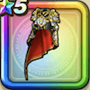

ルビスの戦鎧上
攻略班 9.0点 / ヒャド属性耐性+5%ギラ属性耐性+5%【バトマス】ブレス耐性+2%【海賊】じゅもん耐性+2%【パラディン】斬撃・体技耐性+2%デイン属性耐性+5%ギラ属性耐性+5%スキルの斬撃・体技ダメージ+3%ジバリア属性斬撃・体技ダメージ+6%HP100%以上のときスキルの斬撃ダメージ+2%
くわしい特徴
【レベル別習得スキル】 Lv1ヒャド属性耐性+5% Lv3さいだいMP+5 Lv5守備力+5 Lv8ギラ属性耐性+5% Lv10スキルの斬撃・体技ダメージ+3% Lv12【バトマス】ブレス耐性+2% Lv12【海賊】じゅもん耐性+2% Lv12【パラディン】斬撃・体技耐性+2% Lv15ジバリア属性斬撃・体技ダメージ+6% Lv18デイン属性耐性+5% Lv20HP100%以上のときスキルの斬撃ダメージ+2% Lv23守備力+5 Lv25ギラ属性耐性+5% 【限界突破スキル】 1凸攻撃力+7 2凸すばやさ+10 3凸守備力+5 4凸さいだいHP+10